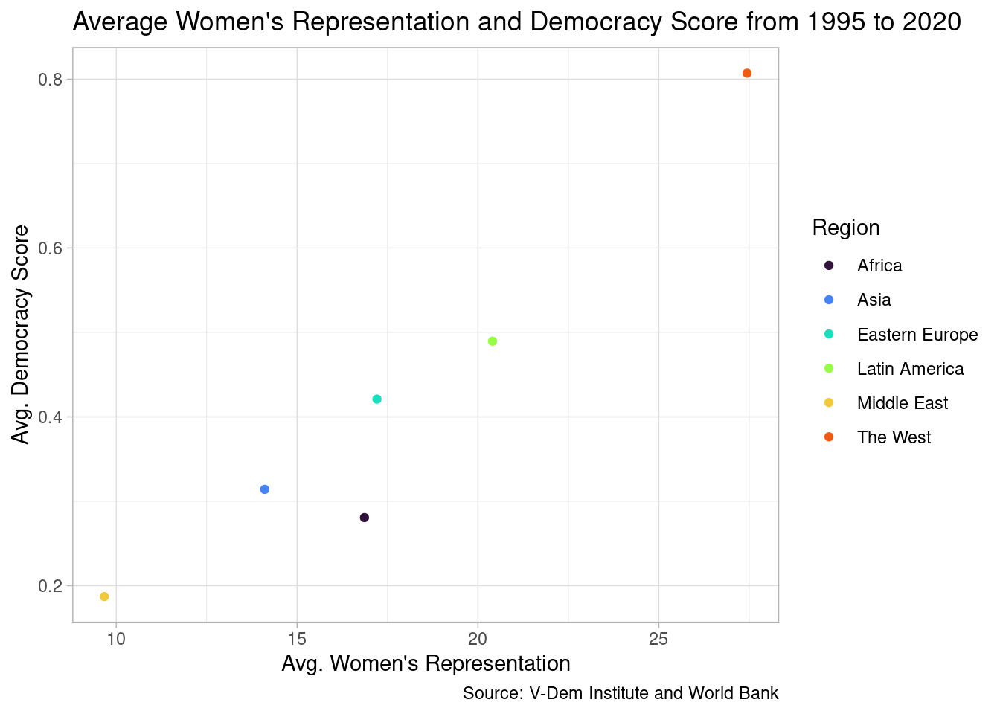

library(tidyr)
library(dplyr)
library(vdemlite)
library(countrycode)
library(wbstats)
library(janitor)
library(ggplot2)Coding Assignment 2
Overview
For this assignment, you are going to download some variables using the wbstats and vdemlite packages. Then you are going to wrangle these data and merge the two data sets into one and analyze how they relate to women’s representation in national parliaments. Do your work for each step in the code chunks provided.
Here is a setup code chunk. You can load all of your packages here or as you go along in the code chunks below using the library() function. However, note that you really only need to load a library once per document.
Warning
Please refrain from installing any packages in your code chunks because this will also install them every time the code chunk is run or your document is rendered. This may not be desirable for you or whoever is looking at or running your code (e.g. me).
Step 1: Download data from V-Dem (10pts)
Use the V-Dem codebook or the searchdem() function in vdemlite to identify at least two measures of women’s empowerment (make at least one something that we did not use in class). Also retrieve the six-fold regional classification that we used in class and a general measure of democracy (like the polyarchy or libdem score). Now use fetchdem() to download the most recent 25 years or so of data for your analysis for all countries in the dataset. Make sure to load the packages that you need and glimpse() the data or View() it to make sure that it downloaded properly.
vdem_dta <- fetchdem(indicators = c("v2x_gender",
"v2clacjstw_osp",
"v2x_libdem",
"e_regionpol_6C"),
start_year = 1995, end_year = 2020) |>
rename(
women_polemp = v2x_gender,
women_jus = v2clacjstw_osp,
libdem = v2x_libdem,
region = e_regionpol_6C
) |>
mutate(
region = case_match(region,
1 ~ "Eastern Europe",
2 ~ "Latin America",
3 ~ "Middle East",
4 ~ "Africa",
5 ~ "The West",
6 ~ "Asia")
)
glimpse(vdem_dta)Rows: 4,619
Columns: 8
$ country_name <chr> "Mexico", "Mexico", "Mexico", "Mexico", "Mexico", "Mex…
$ country_text_id <chr> "MEX", "MEX", "MEX", "MEX", "MEX", "MEX", "MEX", "MEX"…
$ country_id <dbl> 3, 3, 3, 3, 3, 3, 3, 3, 3, 3, 3, 3, 3, 3, 3, 3, 3, 3, …
$ year <dbl> 1995, 1996, 1997, 1998, 1999, 2000, 2001, 2002, 2003, …
$ women_polemp <dbl> 0.645, 0.645, 0.645, 0.645, 0.645, 0.661, 0.661, 0.661…
$ women_jus <dbl> 1.714, 1.714, 1.714, 1.714, 1.714, 1.714, 1.714, 1.714…
$ libdem <dbl> 0.278, 0.291, 0.349, 0.377, 0.383, 0.488, 0.492, 0.498…
$ region <chr> "Latin America", "Latin America", "Latin America", "La…Step 2: Download data from the World Bank (10 pts)
Next, download the variable on women’s representation that we used in Module 1.2 (“SG.GEN.PARL.ZS”), at least one additional measure related to women’s empowerment and a measure of wealth (GDP per capita). Go to the WDI site the wb_search() function to identify relevant variables. Download data for the same time period as you did for the V-Dem data for all countries. Ensure that at least one of the variables you select is different from the ones we explored in class.
Important
Try to make sure you download indicators with enough data to conduct your analysis. You won’t get great results if there are too many NAs.
indicators <- c("gdp_pc" = "NY.GDP.PCAP.CD", "women_rep" = "SG.GEN.PARL.ZS", "women_lawbus" = "SG.LAW.INDX")
wb_dta <- wb_data(indicators, start_date = 1995, end_date = 2020)Step 3: Clean the data (20 pts)
Now clean the data. Drop any columns that you will not need for the analysis. Filter out any years that do not match between the two data frames. Transform the region codes into actual region names. Etc.
# clean v-dem data
vdem_dta <- vdem_dta |>
select(!country_text_id) |>
rename (country = country_name) |>
mutate(iso3c = countrycode(sourcevar = country_id,
origin = "vdem",
destination = "wb")) |>
relocate(iso3c, .after = country_id) |>
select(!country_id)# clean wb data
wb_dta <- wb_dta |>
select(!iso2c) |>
select(!country) |>
rename(year = date)Step 4: Merge the data (20 pts)
Now add country codes using the countrycode package and merge the data using left_join().
merge_dta <- left_join(vdem_dta, wb_dta, by = c("iso3c", "year")) |>
relocate(region, .after = iso3c)
glimpse(merge_dta)Rows: 4,619
Columns: 10
$ country <chr> "Mexico", "Mexico", "Mexico", "Mexico", "Mexico", "Mexico…
$ iso3c <chr> "MEX", "MEX", "MEX", "MEX", "MEX", "MEX", "MEX", "MEX", "…
$ region <chr> "Latin America", "Latin America", "Latin America", "Latin…
$ year <dbl> 1995, 1996, 1997, 1998, 1999, 2000, 2001, 2002, 2003, 200…
$ women_polemp <dbl> 0.645, 0.645, 0.645, 0.645, 0.645, 0.661, 0.661, 0.661, 0…
$ women_jus <dbl> 1.714, 1.714, 1.714, 1.714, 1.714, 1.714, 1.714, 1.714, 1…
$ libdem <dbl> 0.278, 0.291, 0.349, 0.377, 0.383, 0.488, 0.492, 0.498, 0…
$ gdp_pc <dbl> 4183.878, 4674.368, 5567.356, 5832.693, 6499.972, 7524.02…
$ women_rep <dbl> NA, NA, 14.20000, 17.40000, 18.20000, 16.00000, 16.00000,…
$ women_lawbus <dbl> 67.500, 67.500, 67.500, 67.500, 67.500, 72.500, 72.500, 7…Step 5: Summarize your combined data set (20 pts)
Use group_by(), summarize() and arrange() to glean preliminary insights about your data. For example, how do regions compare on mean values of women’s representation and how do these values relate to the values of other variables in your data set? Which countries stand out in terms of women’s representation?
# Regional summary
region_dta <- merge_dta |>
group_by(region) |>
summarize(
women_rep_mean = mean(women_rep, na.rm = TRUE),
libdem_mean = mean(libdem, na.rm = TRUE),
gdp_pc_mean = mean(gdp_pc, na.rm = TRUE),
) |>
arrange(desc(women_rep_mean))
region_dta# A tibble: 6 × 4
region women_rep_mean libdem_mean gdp_pc_mean
<chr> <dbl> <dbl> <dbl>
1 The West 27.4 0.807 40659.
2 Latin America 20.4 0.490 5927.
3 Eastern Europe 17.2 0.421 6292.
4 Africa 16.9 0.281 1785.
5 Asia 14.1 0.314 7040.
6 Middle East 9.67 0.187 13091.# Country summary
country_dta <- merge_dta |>
group_by(country) |>
summarize(
women_rep_mean = mean(women_rep, na.rm = TRUE),
libdem_mean = mean(libdem, na.rm = TRUE),
women_rep_max = max(women_rep, na.rm = TRUE),
libdem_max = max(libdem, na.rm = TRUE),
) |>
arrange(desc(women_rep_mean))
country_dta# A tibble: 179 × 5
country women_rep_mean libdem_mean women_rep_max libdem_max
<chr> <dbl> <dbl> <dbl> <dbl>
1 Rwanda 48.1 0.123 63.8 0.136
2 Sweden 44.7 0.881 47.3 0.887
3 Cuba 40.2 0.0492 53.2 0.063
4 Finland 39.9 0.838 47 0.851
5 Norway 38.4 0.857 41.4 0.869
6 Denmark 37.8 0.888 39.7 0.897
7 Netherlands 37.0 0.822 42 0.835
8 South Africa 36.9 0.622 46.8 0.659
9 Iceland 36.2 0.785 47.6 0.8
10 Argentina 35.6 0.629 40.9 0.687
# ℹ 169 more rowsRegions with higher women’s representaion means tend to have a higher democracy score on average, however, GDP per capita does not seem to be correlated with the other two statistics. Countries with higher women’s representation means and maximums usually have high respective democracy scores as well. Some countries with high women’s representation have low liberal democracy scores, but most countries with low women’s representation also have low liberal democracy scores.
Warning
Don’t write your paragraphs or any interpretation or analysis in a code chunk. Use markdown text. Quarto is designed to be a literate programming tool, so you can write your analysis in markdown text and include code chunks when necessary to support your argument.
Step 6: Visualize and interpret your data (20 pts)
Using the data from step 5, create an appropriate visualization that either shows differences in levels of women’s empowerment across countries or regions or demonstrates the relationship between women’s empowerment and a potential explanatory variable like welath or democracy. Then write a few lines about the patterns that your visualization uncovers. (Note that you will need to store the summary that you created in Step 5 as an object in order to do this.)
ggplot(region_dta, aes(x= women_rep_mean, y= libdem_mean, color=region)) +
geom_point() +
labs(
title= "Average Women's Representation and Democracy Score from 1995 to 2020",
caption= "Source: V-Dem Institute and World Bank",
x= "Avg. Women's Representation",
y= "Avg. Democracy Score",
color= "Region",
) +
scale_color_viridis_d(option="turbo", end=.8)+
theme_light()
Although there are not many regions to compare, the given data sample suggests a strong linear relationship between democracy and women’s representation.
Note
You can relate your analysis to the assigned Norris reading that explores reasons for variations in women’s empowerment but this is not required.
Extra Credit (3 pts.)
Sometimes our data does not come in the format that we need to have it in for our analysis. Demonstrate that you know how to pivot data from wide to long form using the world_bank_pop data frame that comes with the tidyr package. Then pivot again (wider this time) to get the data into tidy format.
Now render the document to make sure everything runs and to produce a final HTML document!
Submission
After rendering your document, export your project folder and submit it on Blackboard. You will find the link to the Coding Assignment one submission portal under the Assignments link. There is a screen capture video in the Discord server that will help you understand how to do this.
Deadline Extension
I am going to be moving this weekend and may not be able to respond to questions right away (I may not even have an internet connection). Therefore I am extending the deadline to Tuesday, March 4 at 11:59 PM.